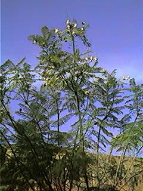
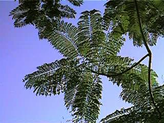

|
Jacaranda
mimosifolia D.
Don, Bot. Reg.
8: t. 631 (1 Jun 1822)
J.
ovalifolia R. Br. in Bot. Mag. 49:
t. 2327
(1822)
|
Bignoniáceas |
| Jacarandá o
jacaranda,
acacia jacarandá |
Árbol semicaducifolio |
|
Árbol semicaducifolio,
monoico, de 8-15 m,
aunque puede alcanzar hasta 20 m,
de crecimiento lento;
tronco
de unos 30 cm de diámetro; corteza semilisa, de color
pardusco
claro.
Hojas compuestas,
bipinnadas,
generalmente opuestas,
pecioladas; lámina de hasta 50 cm; pinnas formadas por
25-30
pares de pínnulas de 1 cm aproximadamente,
lanceoladas y terminadas en una punta fina.
Inflorescencia en
panículas terminales, que aparecen antes de que nazcan
las hojas.
Fruto de tipo cápsula, aplanado,
con dos
valvas leñosas y numerosas semillas aladas.
Florece
durante gran
parte del año,
principalmente de Mayo a Junio, con una segunda
floración entre
Septiembre y Octubre. |
 Foto: Carlos Romero Zarco, Nov. 2002 |
 Foto: Carlos Romero Zarco, Nov. 2002 |
Observaciones.-
El
nombre genérico procede del nombre vulgar brasileño, jacarandá.
Su madera se usa en ebanistería para la fabricación de pianos y guitarras Es un árbol muy utilizado en las calles de Sevilla por su floración expectacular. |
| Área de Origen.- Sudamérica: Brasil y Argentina. | |
| Uso en el campus.- Como
árbol ornamental, sobre césped o en linea. Hay tres
ejemplares
en la zona central del Campus que no suelen perder la hoja
completamente. |
Localización.- |
|
Francisco José
López Acosta
& Cristina Muñoz Lagares (2001) Julio Fernández
Mendoza (2005) &
Carlos Romero Zarco, 2003, 2005, 2015
|
|